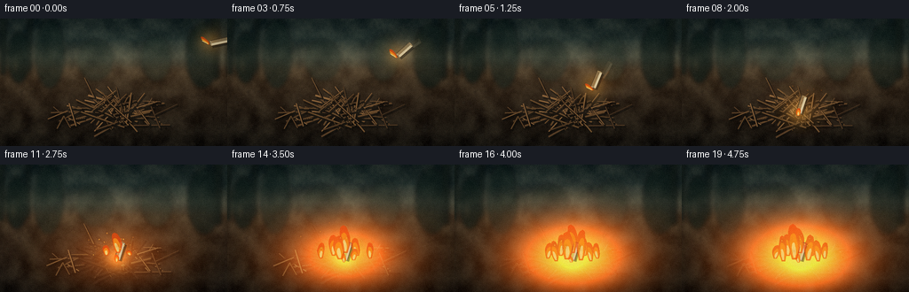
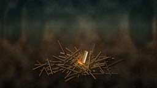
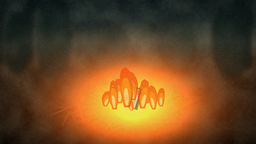
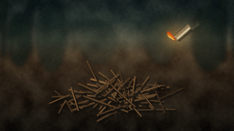
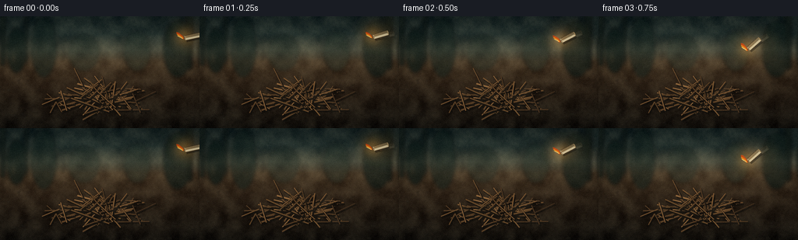
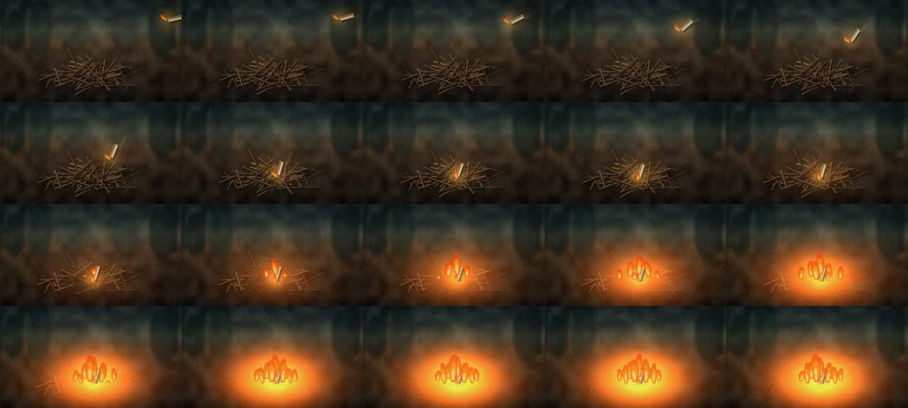
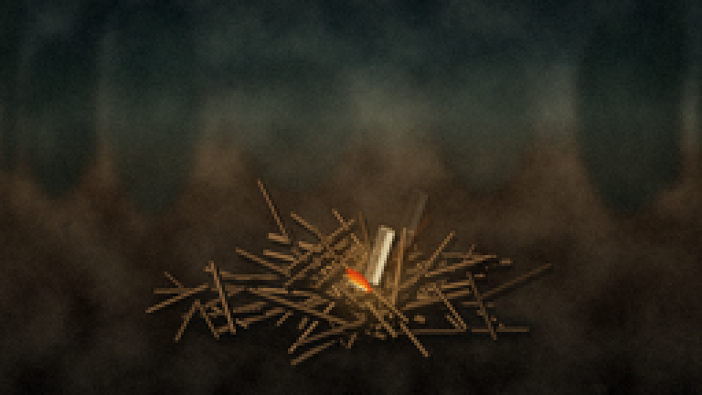
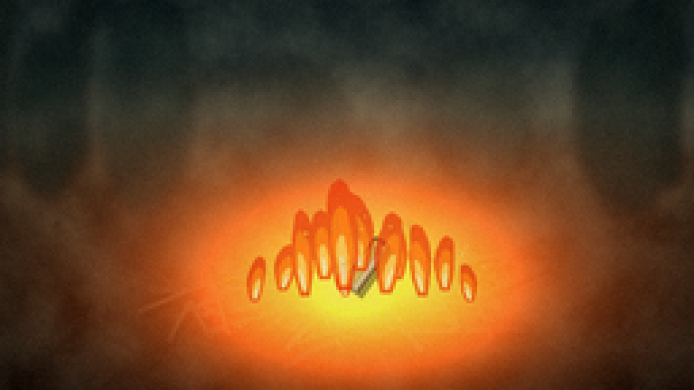
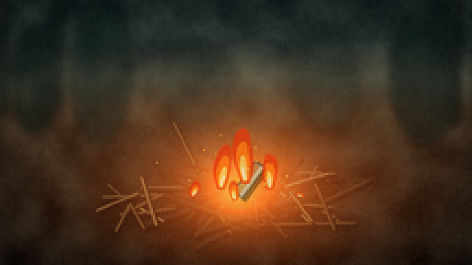

CODING AGENTS AS PIXEL WORLD MODELS
traex/DeepSeek-V4.1-Flash · material_0027
点击播放 · 原生 RGB 像素
逐轮保存的候选
回放视频、检查图与代码变化。
每份候选均可单独播放。实际图片检查记录在下方工具轨迹中。
候选 01播放与检查图
点击播放 · 原生 RGB 像素

展开代码变化
--- 上一保存版本
+++ 本次保存版本
@@ -0,0 +1,858 @@
+"""Procedural renderer for: a burning candle thrown into a pile of dry twigs."""
+
+from __future__ import annotations
+
+import math
+from pathlib import Path
+
+import numpy as np
+from PIL import Image, ImageDraw, ImageFilter
+
+from artifact_io import save
+
+
+OUT_W, OUT_H = 256, 144
+FRAMES = 20
+FPS = 4.0
+DURATION = FRAMES / FPS
+
+# The scene is composed slightly wider than the output so the camera can move.
+WORLD_W, WORLD_H = 288, 162
+SS = 4
+SW, SH = WORLD_W * SS, WORLD_H * SS
+
+PILE_X, PILE_Y = 145.0, 113.0
+IMPACT = np.array([151.0, 106.0])
+
+
+def clamp(value: float, low: float = 0.0, high: float = 1.0) -> float:
+ return max(low, min(high, value))
+
+
+def smoothstep(edge0: float, edge1: float, value: float) -> float:
+ if edge0 == edge1:
+ return float(value >= edge1)
+ x = clamp((value - edge0) / (edge1 - edge0))
+ return x * x * (3.0 - 2.0 * x)
+
+
+def px_point(x: float, y: float) -> tuple[int, int]:
+ return round(x * SS), round(y * SS)
+
+
+def px_width(width: float) -> int:
+ return max(1, round(width * SS))
+
+
+def rgba(color: tuple[int, int, int], alpha: int = 255) -> tuple[int, int, int, int]:
+ return color[0], color[1], color[2], alpha
+
+
+def blend_color(a: tuple[int, int, int], b: tuple[int, int, int], amount: float) -> tuple[int, int, int]:
+ return tuple(round(a[i] * (1.0 - amount) + b[i] * amount) for i in range(3))
+
+
+def resized_noise(rng: np.random.Generator, shape: tuple[int, int], grid: tuple[int, int]) -> np.ndarray:
+ values = rng.random(grid)
+ image = Image.fromarray(np.uint8(np.clip(values, 0, 1) * 255), mode="L")
+ image = image.resize((shape[1], shape[0]), Image.Resampling.BICUBIC)
+ return np.asarray(image, dtype=np.float32) / 255.0
+
+
+def make_background() -> Image.Image:
+ rng = np.random.default_rng(1701)
+ yy = np.arange(WORLD_H, dtype=np.float32)[:, None]
+
+ stops_y = np.array([0, 32, 52, 66, 96, 162], dtype=np.float32)
+ stops_rgb = np.array(
+ [
+ [23, 31, 30],
+ [37, 47, 43],
+ [77, 76, 60],
+ [74, 57, 38],
+ [48, 35, 23],
+ [19, 15, 11],
+ ],
+ dtype=np.float32,
+ )
+ base = np.stack([np.interp(yy[:, 0], stops_y, stops_rgb[:, c]) for c in range(3)], axis=-1)
+ base = np.repeat(base[:, None, :], WORLD_W, axis=1)
+
+ coarse = resized_noise(rng, (WORLD_H, WORLD_W), (15, 28)) - 0.5
+ fine = resized_noise(rng, (WORLD_H, WORLD_W), (54, 96)) - 0.5
+ base += coarse[..., None] * np.array([25.0, 24.0, 19.0])
+ base += fine[..., None] * np.array([8.0, 7.0, 5.0])
+
+ # A band of cool haze separates the forest from the warm forest floor.
+ haze = np.exp(-((yy[:, 0] - 56.0) / 11.0) ** 2)[:, None, None]
+ base = base * (1.0 - haze * 0.16) + np.array([102, 106, 92]) * haze * 0.16
+
+ background = Image.fromarray(np.uint8(np.clip(base, 0, 255)), mode="RGB")
+ background = background.resize((SW, SH), Image.Resampling.BICUBIC).convert("RGBA")
+
+ # Broad, defocused silhouettes give depth without competing with the action.
+ distant = Image.new("RGBA", (SW, SH), (0, 0, 0, 0))
+ dd = ImageDraw.Draw(distant, "RGBA")
+ for x, y, w, h, color, alpha in [
+ (24, 24, 26, 58, (13, 24, 20), 165),
+ (55, 10, 34, 78, (15, 27, 23), 130),
+ (225, 14, 38, 74, (14, 25, 21), 150),
+ (270, 18, 27, 70, (12, 22, 18), 180),
+ (103, 32, 41, 48, (25, 36, 30), 95),
+ (174, 28, 35, 52, (22, 34, 28), 95),
+ ]:
+ dd.ellipse(
+ (x * SS, y * SS, (x + w) * SS, (y + h) * SS),
+ fill=rgba(color, alpha),
+ )
+
+ trunk_specs = [
+ (16, -12, 7, 85, 185),
+ (47, -9, 5, 78, 160),
+ (255, -12, 8, 89, 185),
+ (277, -8, 5, 83, 190),
+ ]
+ for x, y, w, h, alpha in trunk_specs:
+ dd.rounded_rectangle(
+ (x * SS, y * SS, (x + w) * SS, (y + h) * SS),
+ radius=3 * SS,
+ fill=rgba((18, 25, 20), alpha),
+ )
+ dd.line(
+ ((x + w * 0.55) * SS, (y + 18) * SS, (x + w * 1.8) * SS, (y + 9) * SS),
+ fill=rgba((15, 21, 18), int(alpha * 0.75)),
+ width=px_width(1.2),
+ )
+
+ for i in range(84):
+ x = rng.uniform(0, WORLD_W)
+ y = rng.uniform(51, 70)
+ length = rng.uniform(5, 19)
+ lean = rng.uniform(-4, 4)
+ shade = rng.integers(40, 76)
+ dd.line(
+ (x * SS, y * SS, (x + lean) * SS, (y - length) * SS),
+ fill=rgba(
+ (int(shade * 0.45), int(shade * 0.58), int(shade * 0.42)),
+ int(rng.integers(45, 95)),
+ ),
+ width=px_width(rng.uniform(0.35, 0.75)),
+ )
+
+ distant = distant.filter(ImageFilter.GaussianBlur(2.1 * SS))
+ background = Image.alpha_composite(background, distant)
+
+ # Ground litter is sharper than the forest but still subordinate to the twigs.
+ floor = Image.new("RGBA", (SW, SH), (0, 0, 0, 0))
+ fd = ImageDraw.Draw(floor, "RGBA")
+ for i in range(105):
+ x = rng.uniform(4, WORLD_W - 4)
+ y = rng.uniform(70, WORLD_H - 2)
+ depth = smoothstep(70, 158, y)
+ length = rng.uniform(1.5, 7.0) * (0.7 + depth)
+ angle = rng.uniform(-0.45, 0.45)
+ dx, dy = math.cos(angle) * length, math.sin(angle) * length
+ tone = rng.choice(np.array([[66, 46, 28], [88, 61, 34], [47, 39, 27], [34, 31, 22]], dtype=np.int16))
+ fd.line(
+ (x * SS, y * SS, (x + dx) * SS, (y + dy) * SS),
+ fill=rgba(tuple(int(v) for v in tone), rng.integers(40, 95)),
+ width=px_width(rng.uniform(0.35, 0.85)),
+ )
+
+ for i in range(35):
+ x = rng.uniform(4, WORLD_W - 4)
+ y = rng.uniform(77, WORLD_H - 3)
+ radius = rng.uniform(0.7, 2.2) * (0.7 + smoothstep(76, 150, y))
+ fd.ellipse(
+ ((x - radius) * SS, (y - radius * 0.55) * SS, (x + radius) * SS, (y + radius * 0.55) * SS),
+ fill=rgba((40, 35, 27), rng.integers(35, 85)),
+ )
+
+ floor = floor.filter(ImageFilter.GaussianBlur(0.35 * SS))
+ background = Image.alpha_composite(background, floor)
+
+ # Fine grain is generated after upscaling so the small frame still feels textured.
+ grain = rng.normal(0, 3.0, (SH, SW, 1)).astype(np.float32)
+ arr = np.asarray(background.convert("RGB"), dtype=np.float32) + grain
+ return Image.fromarray(np.uint8(np.clip(arr, 0, 255)), mode="RGB").convert("RGBA")
+
+
+def build_twigs() -> list[dict]:
+ rng = np.random.default_rng(8128)
+ twigs: list[dict] = []
+
+ def add(cx, cy, length, angle, width, z, color, branch=False):
+ dx = math.cos(angle) * length * 0.5
+ dy = math.sin(angle) * length * 0.5
+ twigs.append(
+ {
+ "x1": cx - dx,
+ "y1": cy - dy,
+ "x2": cx + dx,
+ "y2": cy + dy,
+ "width": width,
+ "z": z,
+ "color": color,
+ "branch": branch,
+ "phase": rng.random() * math.tau,
+ }
+ )
+
+ palette = [
+ (101, 69, 39),
+ (123, 84, 46),
+ (139, 97, 55),
+ (91, 63, 38),
+ (157, 111, 65),
+ (112, 78, 43),
+ ]
+
+ for i in range(19):
+ add(
+ PILE_X + rng.normal(0, 18),
+ PILE_Y + rng.normal(1, 6),
+ rng.uniform(42, 82),
+ rng.choice([rng.normal(-0.08, 0.25), rng.normal(0.18, 0.23)]),
+ rng.uniform(1.15, 2.15),
+ rng.uniform(0.0, 0.34),
+ palette[rng.integers(0, len(palette))],
+ rng.random() < 0.28,
+ )
+
+ for i in range(31):
+ add(
+ PILE_X + rng.normal(0, 19),
+ PILE_Y + rng.normal(-2, 8),
+ rng.uniform(22, 55),
+ rng.uniform(-1.18, 1.18),
+ rng.uniform(0.8, 1.65),
+ rng.uniform(0.2, 0.72),
+ palette[rng.integers(0, len(palette))],
+ rng.random() < 0.22,
+ )
+
+ for i in range(23):
+ add(
+ PILE_X + rng.normal(0, 15),
+ PILE_Y + rng.normal(-7, 7),
+ rng.uniform(12, 34),
+ rng.uniform(-1.45, 1.45),
+ rng.uniform(0.55, 1.15),
+ rng.uniform(0.55, 1.0),
+ palette[rng.integers(0, len(palette))],
+ rng.random() < 0.16,
+ )
+
+ # A few loose twigs widen the silhouette of the pile.
+ for i in range(11):
+ side = -1 if rng.random() < 0.5 else 1
+ add(
+ PILE_X + side * rng.uniform(40, 65),
+ PILE_Y + rng.uniform(-4, 16),
+ rng.uniform(13, 31),
+ rng.uniform(-1.3, 1.3),
+ rng.uniform(0.55, 1.1),
+ rng.uniform(0.0, 0.8),
+ palette[rng.integers(0, len(palette))],
+ rng.random() < 0.15,
+ )
+
+ twigs.sort(key=lambda item: item["z"])
+ return twigs
+
+
+def impact_displacement(twig: dict, t: float) -> tuple[float, float]:
+ if t < 1.48:
+ return 0.0, 0.0
+ mx = (twig["x1"] + twig["x2"]) * 0.5
+ my = (twig["y1"] + twig["y2"]) * 0.5
+ dx, dy = mx - IMPACT[0], my - IMPACT[1]
+ distance = max(3.0, math.hypot(dx, dy))
+ envelope = math.exp(-max(0.0, t - 1.52) / 0.48)
+ pulse = math.sin((t - 1.5) * 31.0 + twig["phase"])
+ strength = 2.6 * envelope * (0.35 + 0.65 * pulse)
+ falloff = math.exp(-distance / 33.0)
+ return dx / distance * strength * falloff, dy / distance * strength * falloff
+
+
+def draw_twigs(t: float, fire: float) -> Image.Image:
+ layer = Image.new("RGBA", (SW, SH), (0, 0, 0, 0))
+ draw = ImageDraw.Draw(layer, "RGBA")
+
+ for twig in TWIGS:
+ jx, jy = impact_displacement(twig, t)
+ x1, y1 = twig["x1"] + jx, twig["y1"] + jy
+ x2, y2 = twig["x2"] + jx, twig["y2"] + jy
+ width = twig["width"]
+ color = twig["color"]
+ dx, dy = x2 - x1, y2 - y1
+ length = max(1.0, math.hypot(dx, dy))
+ nx, ny = -dy / length, dx / length
+
+ draw.line(
+ ((x1 + 1.5) * SS, (y1 + 2.0) * SS, (x2 + 1.5) * SS, (y2 + 2.0) * SS),
+ fill=rgba((10, 8, 6), 105),
+ width=px_width(width + 1.2),
+ )
+ draw.line(
+ (x1 * SS, y1 * SS, x2 * SS, y2 * SS),
+ fill=rgba((46, 31, 20), 225),
+ width=px_width(width + 0.85),
+ )
+ draw.line(
+ (x1 * SS, y1 * SS, x2 * SS, y2 * SS),
+ fill=rgba(color, 245),
+ width=px_width(width),
+ )
+ draw.line(
+ (
+ (x1 + nx * width * 0.25 + 0.3) * SS,
+ (y1 + ny * width * 0.25 - 0.25) * SS,
+ (x2 + nx * width * 0.25 + 0.3) * SS,
+ (y2 + ny * width * 0.25 - 0.25) * SS,
+ ),
+ fill=rgba(blend_color(color, (222, 172, 100), 0.52), 120),
+ width=px_width(max(0.34, width * 0.32)),
+ )
+
+ if twig["branch"]:
+ bx = x1 + dx * 0.58
+ by = y1 + dy * 0.58
+ side = 1 if twig["phase"] > math.pi else -1
+ bl = min(12.0, length * 0.34)
+ ba = math.atan2(dy, dx) + side * 0.72
+ draw.line(
+ (bx * SS, by * SS, (bx + math.cos(ba) * bl) * SS, (by + math.sin(ba) * bl) * SS),
+ fill=rgba(blend_color(color, (45, 31, 20), 0.2), 220),
+ width=px_width(max(0.48, width * 0.55)),
+ )
+
+ # The central twigs char first, then glowing cracks spread outward.
+ mx, my = (x1 + x2) * 0.5, (y1 + y2) * 0.5
+ distance = math.hypot(mx - PILE_X, my - PILE_Y)
+ threshold = 0.04 + 0.78 * smoothstep(8, 54, distance) + 0.06 * (0.5 + 0.5 * math.sin(twig["phase"]))
+ local_burn = smoothstep(threshold, min(1.0, threshold + 0.24), fire)
+ if local_burn > 0:
+ char_color = blend_color(color, (28, 22, 18), 0.82)
+ draw.line(
+ (x1 * SS, y1 * SS, x2 * SS, y2 * SS),
+ fill=rgba(char_color, int(195 * local_burn)),
+ width=px_width(width + 0.35),
+ )
+ if local_burn > 0.35 and math.sin(twig["phase"] * 2.1 + t * 3.0) > -0.15:
+ a = 0.24 + 0.12 * math.sin(t * 7.0 + twig["phase"])
+ b = 0.72 + 0.08 * math.sin(t * 5.0 + twig["phase"] * 1.7)
+ draw.line(
+ (
+ (x1 + dx * a) * SS,
+ (y1 + dy * a) * SS,
+ (x1 + dx * b) * SS,
+ (y1 + dy * b) * SS,
+ ),
+ fill=rgba((255, 94, 22), int(100 * local_burn)),
+ width=px_width(max(0.28, width * 0.24)),
+ )
+
+ return layer
+
+
+def candle_state(t: float) -> tuple[np.ndarray, float, np.ndarray]:
+ if t < 1.53:
+ u = clamp(t / 1.53)
+ # Quadratic Bezier: a visible throw from the right side into the pile.
+ p0 = np.array([263.0, 35.0])
+ p1 = np.array([222.0, 20.0])
+ p2 = np.array([151.0, 106.0])
+ pos = (1 - u) ** 2 * p0 + 2 * (1 - u) * u * p1 + u * u * p2
+ angle = 78.0 - 61.0 * smoothstep(0.0, 1.0, u)
+ velocity = 2 * (1 - u) * (p1 - p0) + 2 * u * (p2 - p1)
+ return pos, angle, velocity
+
+ settle = smoothstep(1.53, 1.94, t)
+ bounce = -2.4 * math.exp(-((t - 1.61) / 0.17) ** 2)
+ pos = np.array([151.0, 106.0 + bounce])
+ angle = 17.0 + 5.0 * math.exp(-((t - 1.63) / 0.24) ** 2) + 0.4 * math.sin((t - 1.7) * 2.0)
+ return pos, angle, np.array([0.0, 0.0])
+
+
+def candle_vectors(angle_deg: float) -> tuple[np.ndarray, np.ndarray]:
+ angle = math.radians(angle_deg)
+ up = np.array([math.sin(angle), -math.cos(angle)])
+ side = np.array([math.cos(angle), math.sin(angle)])
+ return up, side
+
+
+def flame_polygon(
+ base_x: float,
+ base_y: float,
+ height: float,
+ width: float,
+ lean: float,
+ phase: float,
+) -> list[tuple[float, float]]:
+ left = []
+ right = []
+ samples = 18
+ for i in range(samples + 1):
+ u = i / samples
+ center = base_x + lean * (u ** 1.15) + math.sin(phase + u * 5.2) * width * 0.16 * u
+ swell = (0.30 + 0.70 * math.sin(min(1.0, u / 0.72) * math.pi * 0.5)) * (1.0 - u) ** 0.34
+ half = width * swell
+ y = base_y - height * u
+ left.append((center - half, y))
+ right.append((center + half, y))
+ return left + list(reversed(right))
+
+
+def draw_flame_shape(
+ draw: ImageDraw.ImageDraw,
+ base_x: float,
+ base_y: float,
+ height: float,
+ width: float,
+ lean: float,
+ phase: float,
+ layer_scale: float = 1.0,
+ alpha_scale: float = 1.0,
+) -> None:
+ if height < 1.0:
+ return
+ specs = [
+ (1.0, 1.0, (0.0, 0.0), (244, 72, 11), 175),
+ (0.68, 0.70, (lean * 0.05, -height * 0.035), (255, 142, 25), 225),
+ (0.34, 0.43, (lean * 0.08, -height * 0.05), (255, 226, 132), 235),
+ ]
+ for width_scale, height_scale, offset, color, alpha in specs:
+ poly = flame_polygon(
+ base_x + offset[0],
+ base_y + offset[1],
+ height * height_scale * layer_scale,
+ width * width_scale,
+ lean * (0.8 + 0.2 * width_scale),
+ phase + (1.0 - width_scale) * 0.7,
+ )
+ draw.polygon(
+ [(x * SS, y * SS) for x, y in poly],
+ fill=rgba(color, int(alpha * alpha_scale)),
+ )
+
+
+def draw_candle(
+ layer: Image.Image,
+ pos: np.ndarray,
+ angle: float,
+ t: float,
+ alpha_scale: float = 1.0,
+ with_flame: bool = True,
+) -> np.ndarray:
+ draw = ImageDraw.Draw(layer, "RGBA")
+ up, side = candle_vectors(angle)
+ length = 19.0
+ radius = 2.75
+ top = pos - up * (length * 0.5)
+ base = pos + up * (length * 0.5)
+ alpha = int(255 * alpha_scale)
+
+ def body_poly(extra: float = 0.0) -> list[tuple[float, float]]:
+ r = radius + extra
+ return [
+ tuple((top - side * r) * SS),
+ tuple((top + side * r) * SS),
+ tuple((base + side * r) * SS),
+ tuple((base - side * r) * SS),
+ ]
+
+ shadow_offset = np.array([1.2, 1.8])
+ draw.polygon(
+ [((x / SS + shadow_offset[0]) * SS, (y / SS + shadow_offset[1]) * SS) for x, y in body_poly(0.9)],
+ fill=rgba((17, 12, 8), int(105 * alpha_scale)),
+ )
+ draw.polygon(body_poly(0.55), fill=rgba((73, 54, 32), int(245 * alpha_scale)))
+ draw.polygon(body_poly(), fill=rgba((225, 207, 163), alpha))
+
+ # Warm shaded side and a narrow specular strip make the small cylinder legible.
+ draw.polygon(
+ [tuple((top - side * radius) * SS), tuple((top + side * radius * 0.1) * SS), tuple((base + side * radius * 0.1) * SS), tuple((base - side * radius) * SS)],
+ fill=rgba((190, 160, 111), int(120 * alpha_scale)),
+ )
+ draw.line(
+ tuple((top + side * radius * 0.52) * SS) + tuple((base + side * radius * 0.52) * SS),
+ fill=rgba((255, 244, 205), int(185 * alpha_scale)),
+ width=px_width(0.55),
+ )
+
+ for cap_center, tint in [(top, (242, 224, 179)), (base, (168, 140, 94))]:
+ ring = []
+ for i in range(18):
+ theta = math.tau * i / 18
+ ring.append(tuple((cap_center + side * radius * math.cos(theta) + up * 0.62 * math.sin(theta)) * SS))
+ draw.polygon(ring, fill=rgba(tint, int(235 * alpha_scale)))
+
+ rim = []
+ for i in range(18):
+ theta = math.tau * i / 18
+ rim.append(tuple((top + side * radius * 0.82 * math.cos(theta) + up * 0.30 * math.sin(theta)) * SS))
+ draw.polygon(rim, fill=rgba((156, 122, 76), int(210 * alpha_scale)))
+
+ wick_tip = top - up * 2.9
+ draw.line(
+ tuple(top * SS) + tuple(wick_tip * SS),
+ fill=rgba((34, 26, 20), int(255 * alpha_scale)),
+ width=px_width(0.55),
+ )
+
+ if with_flame and alpha_scale > 0.5:
+ if t < 1.53:
+ vel = candle_state(t)[2]
+ speed = np.linalg.norm(vel)
+ lean = -clamp(speed / 38.0, 0.25, 1.0) * 7.5
+ height = 8.8 + 1.1 * math.sin(t * 19.0)
+ else:
+ lean = -1.0 + 1.2 * math.sin(t * 7.3)
+ height = 9.3 + 1.2 * math.sin(t * 15.0 + 0.7)
+ draw_flame_shape(draw, wick_tip[0], wick_tip[1] + 0.6, height, 3.4, lean, t * 11.0 + 0.6)
+ return wick_tip
+
+
+def draw_flight_trail(layer: Image.Image, t: float) -> None:
+ if t >= 1.53:
+ return
+ trail = Image.new("RGBA", (SW, SH), (0, 0, 0, 0))
+ trail_draw = ImageDraw.Draw(trail, "RGBA")
+ current, _, _ = candle_state(t)
+ previous, _, _ = candle_state(max(0.0, t - 0.26))
+ wick_current = current - candle_vectors(candle_state(t)[1])[0] * (19.0 * 0.5 + 2.9)
+ wick_previous = previous - candle_vectors(candle_state(max(0.0, t - 0.26))[1])[0] * (19.0 * 0.5 + 2.9)
+ trail_draw.line(
+ tuple(wick_previous * SS) + tuple(wick_current * SS),
+ fill=rgba((255, 121, 33), 72),
+ width=px_width(2.0),
+ )
+ trail = trail.filter(ImageFilter.GaussianBlur(1.0 * SS))
+ layer.alpha_composite(trail)
+
+
+def make_fire_tongues() -> list[dict]:
+ specs = [
+ (149, 108, 31, 7.5, -1.5, 0.02, 0.0),
+ (136, 111, 25, 6.5, 0.8, 0.09, 1.1),
+ (162, 111, 24, 6.0, -2.0, 0.16, 2.2),
+ (122, 114, 18, 5.3, 1.2, 0.27, 2.8),
+ (176, 114, 19, 5.0, -1.4, 0.35, 4.0),
+ (143, 115, 38, 8.5, -0.5, 0.43, 1.7),
+ (158, 116, 34, 7.0, 1.0, 0.55, 3.4),
+ (131, 117, 29, 6.0, -2.2, 0.66, 5.0),
+ (169, 117, 27, 5.6, -1.5, 0.76, 5.7),
+ ]
+ return [
+ {
+ "x": x,
+ "y": y,
+ "height": height,
+ "width": width,
+ "lean": lean,
+ "activation": activation,
+ "phase": phase,
+ }
+ for x, y, height, width, lean, activation, phase in specs
+ ]
+
+
+def draw_fire(t: float, fire: float) -> tuple[Image.Image, list[tuple[float, float, float, float]]]:
+ layer = Image.new("RGBA", (SW, SH), (0, 0, 0, 0))
+ draw = ImageDraw.Draw(layer, "RGBA")
+ glow_sources: list[tuple[float, float, float, float]] = []
+ if fire <= 0.0:
+ return layer, glow_sources
+
+ active = []
+ for flame in FIRE_TONGUES:
+ growth = smoothstep(flame["activation"], min(1.0, flame["activation"] + 0.34), fire)
+ if growth <= 0.0:
+ continue
+ flicker = 0.92 + 0.10 * math.sin(t * 12.7 + flame["phase"] * 2.3) + 0.04 * math.sin(t * 24.1 + flame["phase"])
+ height = flame["height"] * growth * flicker
+ width = flame["width"] * (0.58 + 0.42 * growth)
+ lean = flame["lean"] + 1.5 * math.sin(t * 6.2 + flame["phase"])
+ phase = t * 9.0 + flame["phase"]
+ active.append((flame, height, width, lean, phase, growth))
+
+ # Draw all outer shapes first, then inner colors, so overlapping tongues read as one fire.
+ for flame, height, width, lean, phase, growth in active:
+ draw_flame_shape(draw, flame["x"], flame["y"], height, width, lean, phase)
+ glow_sources.append((flame["x"], flame["y"] - height * 0.18, 10.0 + height * 0.55, growth * min(1.0, height / 26.0)))
+
+ return layer, glow_sources
+
+
+def draw_smoke(t: float, fire: float) -> Image.Image:
+ layer = Image.new("RGBA", (SW, SH), (0, 0, 0, 0))
+ if t < 1.55:
+ return layer
+ rng = np.random.default_rng(9901)
+ draw = ImageDraw.Draw(layer, "RGBA")
+ for i in range(22):
+ birth = 1.60 + i * 0.125 + rng.uniform(-0.05, 0.05)
+ age = t - birth
+ if age <= 0 or age > 3.2:
+ continue
+ bx = PILE_X + rng.normal(1.5, 10.0)
+ by = 104.0 + rng.normal(0, 3.0)
+ x = bx - 5.7 * age + math.sin(age * 2.1 + i) * (1.0 + age * 0.4)
+ y = by - (11.5 + 1.6 * math.sin(i)) * age
+ rx = 3.4 + 4.8 * age
+ ry = 2.6 + 4.2 * age
+ alpha = int(30 * (1.0 - age / 3.2) * (0.55 + 0.45 * min(1.0, age / 0.3)))
+ alpha = int(alpha * (0.55 + 0.45 * fire))
+ if alpha <= 0:
+ continue
+ draw.ellipse(
+ ((x - rx) * SS, (y - ry) * SS, (x + rx) * SS, (y + ry) * SS),
+ fill=rgba((105, 100, 87), alpha),
+ )
+
+ layer = layer.filter(ImageFilter.GaussianBlur(2.1 * SS))
+ return layer
+
+
+def draw_impact_dust(t: float) -> Image.Image:
+ layer = Image.new("RGBA", (SW, SH), (0, 0, 0, 0))
+ age = t - 1.50
+ if age < 0 or age > 0.82:
+ return layer
+ draw = ImageDraw.Draw(layer, "RGBA")
+ rng = np.random.default_rng(446)
+ fade = 1.0 - age / 0.82
+ for i in range(14):
+ angle = math.tau * i / 14 + rng.uniform(-0.16, 0.16)
+ speed = rng.uniform(12, 29)
+ x = IMPACT[0] + math.cos(angle) * speed * age
+ y = IMPACT[1] + 3 + math.sin(angle) * speed * age * 0.55 - 4.0 * age * age
+ radius = 1.4 + 3.8 * age
+ draw.ellipse(
+ ((x - radius) * SS, (y - radius * 0.65) * SS, (x + radius) * SS, (y + radius * 0.65) * SS),
+ fill=rgba((112, 88, 57), int(44 * fade)),
+ )
+ return layer.filter(ImageFilter.GaussianBlur(1.2 * SS))
+
+
+def build_particles() -> list[dict]:
+ rng = np.random.default_rng(777)
+ particles = []
+ for i in range(20):
+ angle = rng.uniform(math.pi * 1.03, math.pi * 1.97)
+ speed = rng.uniform(22, 58)
+ particles.append(
+ {
+ "birth": 1.50 + rng.uniform(0, 0.06),
+ "life": rng.uniform(0.30, 0.72),
+ "x": IMPACT[0] + rng.normal(0, 3),
+ "y": IMPACT[1] + rng.normal(0, 2),
+ "vx": math.cos(angle) * speed,
+ "vy": math.sin(angle) * speed - 8,
+ "gravity": rng.uniform(26, 52),
+ "size": rng.uniform(0.45, 1.0),
+ }
+ )
+ for i in range(54):
+ particles.append(
+ {
+ "birth": rng.uniform(2.0, 4.70),
+ "life": rng.uniform(0.9, 2.2),
+ "x": PILE_X + rng.normal(0, 17),
+ "y": PILE_Y - rng.uniform(2, 19),
+ "vx": rng.uniform(-10.0, -2.0),
+ "vy": rng.uniform(-19.0, -8.0),
+ "gravity": rng.uniform(-1.0, 1.6),
+ "size": rng.uniform(0.35, 0.95),
+ }
+ )
+ return particles
+
+
+def draw_particles(t: float, fire: float) -> Image.Image:
+ layer = Image.new("RGBA", (SW, SH), (0, 0, 0, 0))
+ glow = Image.new("RGBA", (SW, SH), (0, 0, 0, 0))
+ draw = ImageDraw.Draw(layer, "RGBA")
+ glow_draw = ImageDraw.Draw(glow, "RGBA")
+ for particle in PARTICLES:
+ age = t - particle["birth"]
+ if age <= 0 or age >= particle["life"]:
+ continue
+ fade = 1.0 - age / particle["life"]
+ x = particle["x"] + particle["vx"] * age + math.sin(age * 7.0 + particle["x"]) * 0.6
+ y = particle["y"] + particle["vy"] * age + 0.5 * particle["gravity"] * age * age
+ size = particle["size"] * (0.7 + 0.3 * fade)
+ color = (255, int(115 + 75 * fade), int(28 + 44 * fade))
+ glow_draw.ellipse(
+ ((x - size * 2.2) * SS, (y - size * 2.2) * SS, (x + size * 2.2) * SS, (y + size * 2.2) * SS),
+ fill=rgba((255, 96, 20), int(58 * fade)),
+ )
+ draw.ellipse(
+ ((x - size * 0.72) * SS, (y - size * 0.72) * SS, (x + size * 0.72) * SS, (y + size * 0.72) * SS),
+ fill=rgba(color, int(245 * fade)),
+ )
+ glow = glow.filter(ImageFilter.GaussianBlur(1.2 * SS))
+ return Image.alpha_composite(glow, layer)
+
+
+def add_glow_source(
+ glow: np.ndarray,
+ x: float,
+ y: float,
+ sigma_x: float,
+ sigma_y: float,
+ color: tuple[float, float, float],
+ intensity: float,
+) -> None:
+ if intensity <= 0:
+ return
+ yy = np.arange(WORLD_H, dtype=np.float32)[:, None]
+ xx = np.arange(WORLD_W, dtype=np.float32)[None, :]
+ falloff = np.exp(-0.5 * (((xx - x) / sigma_x) ** 2 + ((yy - y) / sigma_y) ** 2))
+ glow += falloff[..., None] * np.asarray(color, dtype=np.float32) * intensity
+
+
+def make_glow(
+ t: float,
+ fire: float,
+ candle_pos: np.ndarray,
+ wick_tip: np.ndarray,
+ fire_sources: list[tuple[float, float, float, float]],
+) -> Image.Image:
+ glow = np.zeros((WORLD_H, WORLD_W, 3), dtype=np.float32)
+ candle_strength = 0.28 if t < 1.53 else 0.40
+ add_glow_source(glow, wick_tip[0], wick_tip[1] - 3, 8.5, 8.5, (255, 168, 56), candle_strength)
+ add_glow_source(glow, candle_pos[0], candle_pos[1], 17, 13, (255, 142, 44), candle_strength * 0.45)
+
+ if fire > 0:
+ add_glow_source(glow, PILE_X + 4, PILE_Y - 5, 47, 28, (255, 88, 20), 0.82 * fire)
+ add_glow_source(glow, PILE_X + 3, PILE_Y + 4, 56, 27, (255, 117, 31), 0.62 * fire)
+ for x, y, radius, strength in fire_sources:
+ add_glow_source(glow, x, y, radius, radius * 0.8, (255, 121, 28), 0.18 * strength)
+
+ glow = np.clip(glow, 0, 255)
+ image = Image.fromarray(np.uint8(glow), mode="RGB")
+ return image.resize((SW, SH), Image.Resampling.BICUBIC)
+
+
+def screen_blend(base: Image.Image, glow: Image.Image) -> Image.Image:
+ base_arr = np.asarray(base.convert("RGB"), dtype=np.float32)
+ glow_arr = np.asarray(glow.convert("RGB"), dtype=np.float32)
+ result = 255.0 - (255.0 - base_arr) * (1.0 - glow_arr / 255.0)
+ return Image.fromarray(np.uint8(np.clip(result, 0, 255)), mode="RGB").convert("RGBA")
+
+
+def camera_for_frame(t: float) -> tuple[float, float, float]:
+ zoom = 1.0 + 0.033 * smoothstep(0.0, DURATION, t)
+ shake = 1.65 * math.exp(-((t - 1.58) / 0.18) ** 2)
+ shake_x = shake * math.sin(t * 71.0)
+ shake_y = shake * 0.7 * math.cos(t * 58.0)
+ return zoom, shake_x, shake_y
+
+
+def render_frame(index: int) -> Image.Image:
+ t = index / FPS
+ fire = smoothstep(1.88, 4.45, t)
+ ignition = smoothstep(1.55, 2.15, t)
+
+ scene = BACKGROUND.copy()
+
+ dust = draw_impact_dust(t)
+ if t >= 1.50:
+ scene = Image.alpha_composite(scene, dust)
+
+ twig_layer = draw_twigs(t, fire)
+ scene = Image.alpha_composite(scene, twig_layer)
+
+ smoke = draw_smoke(t, max(ignition, fire))
+ scene = Image.alpha_composite(scene, smoke)
+
+ candle_pos, candle_angle, _ = candle_state(t)
+
+ # Warm light is laid under the sharp flame shapes.
+ dummy_wick = candle_pos - candle_vectors(candle_angle)[0] * (19.0 * 0.5 + 2.9)
+ fire_layer, fire_sources = draw_fire(t, fire)
+ glow = make_glow(t, fire, candle_pos, dummy_wick, fire_sources)
+ scene = screen_blend(scene, glow)
+
+ if t < 1.53:
+ draw_flight_trail(scene, t)
+ ghost = Image.new("RGBA", (SW, SH), (0, 0, 0, 0))
+ ghost_pos, ghost_angle, _ = candle_state(max(0.0, t - 0.13))
+ draw_candle(ghost, ghost_pos, ghost_angle, max(0.0, t - 0.13), alpha_scale=0.15, with_flame=False)
+ scene = Image.alpha_composite(scene, ghost)
+
+ candle_layer = Image.new("RGBA", (SW, SH), (0, 0, 0, 0))
+ wick_tip = draw_candle(candle_layer, candle_pos, candle_angle, t)
+ scene = Image.alpha_composite(scene, candle_layer)
+
+ scene = Image.alpha_composite(scene, fire_layer)
+ particles = draw_particles(t, fire)
+ scene = Image.alpha_composite(scene, particles)
+
+ # A very light bloom around the hottest fire area.
+ bloom = Image.new("RGBA", (SW, SH), (0, 0, 0, 0))
+ bloom_draw = ImageDraw.Draw(bloom, "RGBA")
+ if fire > 0:
+ bx = PILE_X + 2
+ by = PILE_Y - 16 * fire
+ radius = 18 + 24 * fire
+ bloom_draw.ellipse(
+ ((bx - radius) * SS, (by - radius * 0.65) * SS, (bx + radius) * SS, (by + radius * 0.65) * SS),
+ fill=rgba((255, 110, 22), int(30 * fire)),
+ )
+ bloom = bloom.filter(ImageFilter.GaussianBlur(6.0 * SS))
+ scene = Image.alpha_composite(scene, bloom)
+
+ zoom, shake_x, shake_y = camera_for_frame(t)
+ crop_w = (OUT_W * SS) / zoom
+ crop_h = (OUT_H * SS) / zoom
+ center_x = WORLD_W * SS * 0.5 + shake_x * SS
+ center_y = WORLD_H * SS * 0.5 + shake_y * SS
+ box = (
+ center_x - crop_w * 0.5,
+ center_y - crop_h * 0.5,
+ center_x + crop_w * 0.5,
+ center_y + crop_h * 0.5,
+ )
+ frame = scene.crop(tuple(round(v) for v in box)).resize((OUT_W, OUT_H), Image.Resampling.LANCZOS)
+ return frame.convert("RGB")
+
+
+def finish_frame(frame: Image.Image, index: int) -> np.ndarray:
+ rng = np.random.default_rng(5000 + index)
+ arr = np.asarray(frame, dtype=np.float32)
+ yy = np.arange(OUT_H, dtype=np.float32)[:, None]
+ xx = np.arange(OUT_W, dtype=np.float32)[None, :]
+ nx = (xx - OUT_W * 0.5) / (OUT_W * 0.5)
+ ny = (yy - OUT_H * 0.5) / (OUT_H * 0.5)
+ vignette = 1.0 - 0.18 * np.clip((nx * nx * 0.82 + ny * ny * 0.62 - 0.10), 0, 1) ** 1.35
+ arr *= vignette[..., None]
+ arr += rng.normal(0, 1.65, (OUT_H, OUT_W, 1)).astype(np.float32)
+
+ # Subtle teal lift in the shadows and a warm highlight roll-off.
+ luminance = arr.mean(axis=2, keepdims=True) / 255.0
+ shadows = np.clip(1.0 - luminance * 2.2, 0, 1)
+ highlights = np.clip(luminance * 1.45 - 0.34, 0, 1)
+ arr += shadows * np.array([-1.4, 1.3, 2.0], dtype=np.float32)
+ arr = arr * (1.0 - 0.06 * highlights) + np.array([3.0, 1.5, -0.5], dtype=np.float32) * highlights
+ return np.uint8(np.clip(arr, 0, 255))
+
+
+BACKGROUND = make_background()
+TWIGS = build_twigs()
+FIRE_TONGUES = make_fire_tongues()
+PARTICLES = build_particles()
+
+
+def main() -> None:
+ frames = []
+ for index in range(FRAMES):
+ frame = render_frame(index)
+ frames.append(finish_frame(frame, index))
+ save(np.stack(frames), Path(__file__).resolve().parent)
+
+
+if __name__ == "__main__":
+ main()
候选 02播放与检查图
点击播放 · 原生 RGB 像素
展开代码变化
--- 上一保存版本
+++ 本次保存版本
@@ -261,6 +261,36 @@
return twigs
+def draw_ground_shadow(t: float) -> Image.Image:
+ layer = Image.new("RGBA", (SW, SH), (0, 0, 0, 0))
+ draw = ImageDraw.Draw(layer, "RGBA")
+ draw.ellipse(
+ ((PILE_X - 61) * SS, (PILE_Y + 8) * SS, (PILE_X + 67) * SS, (PILE_Y + 23) * SS),
+ fill=rgba((8, 7, 5), 126),
+ )
+ draw.ellipse(
+ ((PILE_X - 34) * SS, (PILE_Y + 11) * SS, (PILE_X + 42) * SS, (PILE_Y + 20) * SS),
+ fill=rgba((5, 5, 4), 88),
+ )
+
+ pos, _, _ = candle_state(t)
+ height = clamp((PILE_Y + 8 - pos[1]) / 86.0)
+ shadow_x = pos[0] - height * 16.0
+ shadow_y = PILE_Y + 14.0
+ shadow_rx = 4.5 + 8.0 * height
+ shadow_alpha = int(20 + 100 * (1.0 - height))
+ draw.ellipse(
+ (
+ (shadow_x - shadow_rx) * SS,
+ (shadow_y - shadow_rx * 0.20) * SS,
+ (shadow_x + shadow_rx) * SS,
+ (shadow_y + shadow_rx * 0.20) * SS,
+ ),
+ fill=rgba((8, 7, 5), shadow_alpha),
+ )
+ return layer.filter(ImageFilter.GaussianBlur(1.35 * SS))
+
+
def impact_displacement(twig: dict, t: float) -> tuple[float, float]:
if t < 1.48:
return 0.0, 0.0
@@ -270,7 +300,7 @@
distance = max(3.0, math.hypot(dx, dy))
envelope = math.exp(-max(0.0, t - 1.52) / 0.48)
pulse = math.sin((t - 1.5) * 31.0 + twig["phase"])
- strength = 2.6 * envelope * (0.35 + 0.65 * pulse)
+ strength = 3.7 * envelope * (0.35 + 0.65 * pulse)
falloff = math.exp(-distance / 33.0)
return dx / distance * strength * falloff, dy / distance * strength * falloff
@@ -368,10 +398,9 @@
velocity = 2 * (1 - u) * (p1 - p0) + 2 * u * (p2 - p1)
return pos, angle, velocity
- settle = smoothstep(1.53, 1.94, t)
bounce = -2.4 * math.exp(-((t - 1.61) / 0.17) ** 2)
pos = np.array([151.0, 106.0 + bounce])
- angle = 17.0 + 5.0 * math.exp(-((t - 1.63) / 0.24) ** 2) + 0.4 * math.sin((t - 1.7) * 2.0)
+ angle = 36.0 + 7.0 * math.exp(-((t - 1.63) / 0.24) ** 2) + 0.5 * math.sin((t - 1.7) * 2.0)
return pos, angle, np.array([0.0, 0.0])
@@ -418,9 +447,10 @@
if height < 1.0:
return
specs = [
- (1.0, 1.0, (0.0, 0.0), (244, 72, 11), 175),
- (0.68, 0.70, (lean * 0.05, -height * 0.035), (255, 142, 25), 225),
- (0.34, 0.43, (lean * 0.08, -height * 0.05), (255, 226, 132), 235),
+ (1.0, 1.0, (0.0, 0.0), (235, 54, 9), 188),
+ (0.67, 0.72, (lean * 0.05, -height * 0.035), (255, 119, 17), 220),
+ (0.35, 0.45, (lean * 0.08, -height * 0.05), (255, 210, 96), 238),
+ (0.15, 0.25, (lean * 0.11, -height * 0.055), (255, 248, 205), 220),
]
for width_scale, height_scale, offset, color, alpha in specs:
poly = flame_polygon(
@@ -447,7 +477,7 @@
) -> np.ndarray:
draw = ImageDraw.Draw(layer, "RGBA")
up, side = candle_vectors(angle)
- length = 19.0
+ length = 20.0
radius = 2.75
top = pos - up * (length * 0.5)
base = pos + up * (length * 0.5)
@@ -468,12 +498,14 @@
fill=rgba((17, 12, 8), int(105 * alpha_scale)),
)
draw.polygon(body_poly(0.55), fill=rgba((73, 54, 32), int(245 * alpha_scale)))
- draw.polygon(body_poly(), fill=rgba((225, 207, 163), alpha))
+ charred = smoothstep(1.48, 1.85, t)
+ wax_color = blend_color((225, 207, 163), (89, 70, 54), charred * 0.28)
+ draw.polygon(body_poly(), fill=rgba(wax_color, alpha))
# Warm shaded side and a narrow specular strip make the small cylinder legible.
draw.polygon(
[tuple((top - side * radius) * SS), tuple((top + side * radius * 0.1) * SS), tuple((base + side * radius * 0.1) * SS), tuple((base - side * radius) * SS)],
- fill=rgba((190, 160, 111), int(120 * alpha_scale)),
+ fill=rgba(blend_color((190, 160, 111), (74, 57, 44), charred * 0.38), int(120 * alpha_scale)),
)
draw.line(
tuple((top + side * radius * 0.52) * SS) + tuple((base + side * radius * 0.52) * SS),
@@ -481,7 +513,9 @@
width=px_width(0.55),
)
- for cap_center, tint in [(top, (242, 224, 179)), (base, (168, 140, 94))]:
+ top_tint = blend_color((242, 224, 179), (105, 80, 55), charred * 0.30)
+ base_tint = blend_color((168, 140, 94), (61, 48, 38), charred * 0.48)
+ for cap_center, tint in [(top, top_tint), (base, base_tint)]:
ring = []
for i in range(18):
theta = math.tau * i / 18
@@ -492,7 +526,7 @@
for i in range(18):
theta = math.tau * i / 18
rim.append(tuple((top + side * radius * 0.82 * math.cos(theta) + up * 0.30 * math.sin(theta)) * SS))
- draw.polygon(rim, fill=rgba((156, 122, 76), int(210 * alpha_scale)))
+ draw.polygon(rim, fill=rgba(blend_color((156, 122, 76), (61, 43, 31), charred * 0.58), int(210 * alpha_scale)))
wick_tip = top - up * 2.9
draw.line(
@@ -534,15 +568,17 @@
def make_fire_tongues() -> list[dict]:
specs = [
- (149, 108, 31, 7.5, -1.5, 0.02, 0.0),
- (136, 111, 25, 6.5, 0.8, 0.09, 1.1),
- (162, 111, 24, 6.0, -2.0, 0.16, 2.2),
- (122, 114, 18, 5.3, 1.2, 0.27, 2.8),
- (176, 114, 19, 5.0, -1.4, 0.35, 4.0),
- (143, 115, 38, 8.5, -0.5, 0.43, 1.7),
- (158, 116, 34, 7.0, 1.0, 0.55, 3.4),
- (131, 117, 29, 6.0, -2.2, 0.66, 5.0),
- (169, 117, 27, 5.6, -1.5, 0.76, 5.7),
+ (149, 108, 31, 7.2, -1.5, 0.02, 0.0),
+ (136, 111, 26, 6.2, 0.8, 0.09, 1.1),
+ (162, 111, 25, 5.8, -2.0, 0.16, 2.2),
+ (121, 115, 20, 5.0, 1.2, 0.27, 2.8),
+ (179, 115, 21, 4.8, -1.4, 0.35, 4.0),
+ (143, 115, 39, 7.5, -0.5, 0.43, 1.7),
+ (158, 116, 35, 6.5, 1.0, 0.55, 3.4),
+ (129, 117, 32, 5.5, -2.2, 0.66, 5.0),
+ (171, 117, 30, 5.2, -1.5, 0.76, 5.7),
+ (111, 119, 16, 4.1, 0.5, 0.82, 4.5),
+ (188, 119, 15, 3.8, -0.4, 0.88, 6.2),
]
return [
{
@@ -567,7 +603,7 @@
active = []
for flame in FIRE_TONGUES:
- growth = smoothstep(flame["activation"], min(1.0, flame["activation"] + 0.34), fire)
+ growth = smoothstep(flame["activation"], min(1.0, flame["activation"] + 0.30), fire)
if growth <= 0.0:
continue
flicker = 0.92 + 0.10 * math.sin(t * 12.7 + flame["phase"] * 2.3) + 0.04 * math.sin(t * 24.1 + flame["phase"])
@@ -583,6 +619,27 @@
glow_sources.append((flame["x"], flame["y"] - height * 0.18, 10.0 + height * 0.55, growth * min(1.0, height / 26.0)))
return layer, glow_sources
+
+
+def draw_ember_bed(t: float, fire: float) -> Image.Image:
+ layer = Image.new("RGBA", (SW, SH), (0, 0, 0, 0))
+ if fire <= 0.02:
+ return layer
+ draw = ImageDraw.Draw(layer, "RGBA")
+ rng = np.random.default_rng(3307)
+ for i in range(30):
+ x = PILE_X + rng.normal(0, 24)
+ y = PILE_Y + rng.uniform(-4, 9)
+ local = smoothstep(0.12, 0.62, fire) * (0.72 + 0.28 * math.sin(t * 8.0 + i * 2.3))
+ if local <= 0:
+ continue
+ radius = rng.uniform(0.8, 2.2) * (0.55 + 0.45 * fire)
+ draw.ellipse(
+ ((x - radius) * SS, (y - radius * 0.55) * SS, (x + radius) * SS, (y + radius * 0.55) * SS),
+ fill=rgba((255, int(74 + 70 * local), 12), int(95 * local)),
+ )
+ layer = layer.filter(ImageFilter.GaussianBlur(0.55 * SS))
+ return layer
def draw_smoke(t: float, fire: float) -> Image.Image:
@@ -670,12 +727,33 @@
return particles
+def build_landing_sparks() -> list[dict]:
+ rng = np.random.default_rng(6122)
+ sparks = []
+ for i in range(24):
+ angle = rng.uniform(-math.pi * 0.95, -math.pi * 0.05)
+ speed = rng.uniform(24, 62)
+ sparks.append(
+ {
+ "birth": 1.51 + rng.uniform(0.0, 0.08),
+ "life": rng.uniform(0.24, 0.66),
+ "x": IMPACT[0] + rng.normal(0, 2.0),
+ "y": IMPACT[1] + rng.normal(0, 1.4),
+ "vx": math.cos(angle) * speed,
+ "vy": math.sin(angle) * speed,
+ "gravity": rng.uniform(40, 74),
+ "size": rng.uniform(0.42, 0.86),
+ }
+ )
+ return sparks
+
+
def draw_particles(t: float, fire: float) -> Image.Image:
layer = Image.new("RGBA", (SW, SH), (0, 0, 0, 0))
glow = Image.new("RGBA", (SW, SH), (0, 0, 0, 0))
draw = ImageDraw.Draw(layer, "RGBA")
glow_draw = ImageDraw.Draw(glow, "RGBA")
- for particle in PARTICLES:
+ for particle in PARTICLES + LANDING_SPARKS:
age = t - particle["birth"]
if age <= 0 or age >= particle["life"]:
continue
@@ -726,8 +804,8 @@
add_glow_source(glow, candle_pos[0], candle_pos[1], 17, 13, (255, 142, 44), candle_strength * 0.45)
if fire > 0:
- add_glow_source(glow, PILE_X + 4, PILE_Y - 5, 47, 28, (255, 88, 20), 0.82 * fire)
- add_glow_source(glow, PILE_X + 3, PILE_Y + 4, 56, 27, (255, 117, 31), 0.62 * fire)
+ add_glow_source(glow, PILE_X + 4, PILE_Y - 5, 50, 29, (255, 77, 16), 0.74 * fire)
+ add_glow_source(glow, PILE_X + 3, PILE_Y + 4, 60, 29, (255, 101, 25), 0.55 * fire)
for x, y, radius, strength in fire_sources:
add_glow_source(glow, x, y, radius, radius * 0.8, (255, 121, 28), 0.18 * strength)
@@ -757,6 +835,7 @@
ignition = smoothstep(1.55, 2.15, t)
scene = BACKGROUND.copy()
+ scene = Image.alpha_composite(scene, draw_ground_shadow(t))
dust = draw_impact_dust(t)
if t >= 1.50:
@@ -764,6 +843,8 @@
twig_layer = draw_twigs(t, fire)
scene = Image.alpha_composite(scene, twig_layer)
+
+ scene = Image.alpha_composite(scene, draw_ember_bed(t, fire))
smoke = draw_smoke(t, max(ignition, fire))
scene = Image.alpha_composite(scene, smoke)
@@ -802,7 +883,7 @@
((bx - radius) * SS, (by - radius * 0.65) * SS, (bx + radius) * SS, (by + radius * 0.65) * SS),
fill=rgba((255, 110, 22), int(30 * fire)),
)
- bloom = bloom.filter(ImageFilter.GaussianBlur(6.0 * SS))
+ bloom = bloom.filter(ImageFilter.GaussianBlur(8.0 * SS))
scene = Image.alpha_composite(scene, bloom)
zoom, shake_x, shake_y = camera_for_frame(t)
@@ -844,6 +925,7 @@
TWIGS = build_twigs()
FIRE_TONGUES = make_fire_tongues()
PARTICLES = build_particles()
+LANDING_SPARKS = build_landing_sparks()
def main() -> None:
可观测工具轨迹
实际执行的命令与返回图片。
命令 1exit 0
/bin/bash -lc "pwd && rg --files -g 'prompt.txt' -g 'GENERATION_RULES.md' -g 'task_spec.json' -g '"'!*.pyc'"'"
命令 2exit 0
/bin/bash -lc "find . -maxdepth 2 -type f | sort | sed -n '1,200p'"
命令 3exit 0
/bin/bash -lc 'cat GENERATION_RULES.md'
命令 4exit 0
/bin/bash -lc 'cat task_spec.json'
命令 5exit 0
/bin/bash -lc 'cat prompt.txt'
命令 6exit 0
/bin/bash -lc "sed -n '1,240p' artifact_io.py"
命令 7exit 1
/bin/bash -lc 'python generate.py'
命令 8exit 0
/bin/bash -lc "rg -n 'rng\\.randint' generate.py"
命令 9exit 1
/bin/bash -lc 'python generate.py'
命令 10exit 0
/bin/bash -lc 'python generate.py'
命令 11exit 0
/bin/bash -lc "python - <<'PY'
from PIL import Image
ims=[Image.open(f'frames/{i:02d}.png') for i in range(20)]
w,h=ims[0].size
sheet=Image.new('RGB',(w*5,h*4),(20,20,20))
for i,im in enumerate(ims):
sheet.paste(im,((i%5)*w,(i//5)*h))
sheet.save('.tmp/all_frames.png')
PY"命令 12exit 0
/bin/bash -lc 'python generate.py'
命令 13exit 0
/bin/bash -lc "python - <<'PY'
from PIL import Image
for name in ['inspection.png','transition_check.png','frames/06.png','frames/12.png','frames/19.png']:
im=Image.open(name)
im.resize((im.width*3, im.height*3), Image.Resampling.NEAREST).save('.tmp/'+name.replace('/','_'))
PY"命令 14exit 0
/bin/bash -lc "python -m py_compile generate.py && python - <<'PY'
import json, os
import numpy as np
from PIL import Image
spec=json.load(open('task_spec.json'))
z=np.load('pixels.npz')['pixels']
assert z.shape==(spec['height'],spec['width'],spec['frames']), z.shape
assert len(os.listdir('frames'))==spec['frames']
frames=[]
for i in range(spec['frames']):
im=Image.open(f'frames/{i:02d}.png')
assert im.size==(spec['width'],spec['height']) and im.mode=='RGB'
frames.append(np.asarray(im))
arr=np.stack(frames)
mean=arr.mean(axis=(1,2,3))
diff=np.abs(np.diff(arr.astype(np.int16),axis=0)).mean(axis=(1,2,3))
print('shape',arr.shape,'bytes',os.path.getsize('pixels.npz'),'html_bytes',os.path.getsize('index.html'))
print('mean range',round(float(mean.min()),2),round(float(mean.max()),2))
print('frame differences',np.round(diff,2).tolist())
print('artifacts', sorted(x for x in os.listdir('.') if x in {'generate.py','pixels.npz','index.html','inspection.png','transition_check.png'}))
PY"视觉工具实际返回图片 1

视觉工具实际返回图片 2

视觉工具实际返回图片 3

视觉工具实际返回图片 4

视觉工具实际返回图片 5

视觉工具实际返回图片 6

视觉工具实际返回图片 7

视觉工具实际返回图片 8

视觉工具实际返回图片 9

视觉工具实际返回图片 10

保存候选 2 份；完成命令 14 次；可验证图片返回 10 张。原始 API 响应与完整日志保留在本地。